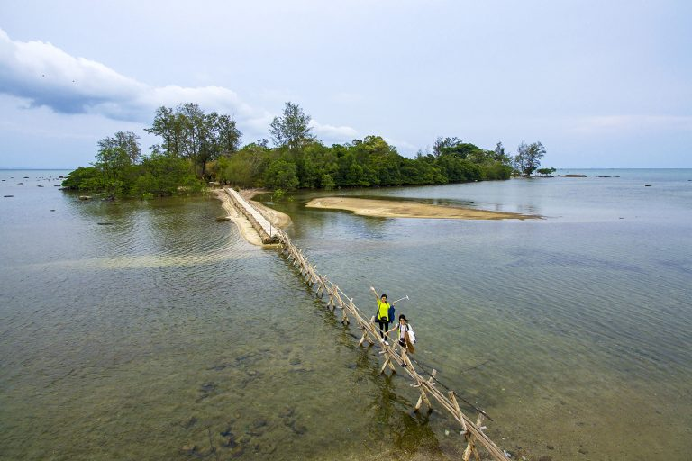
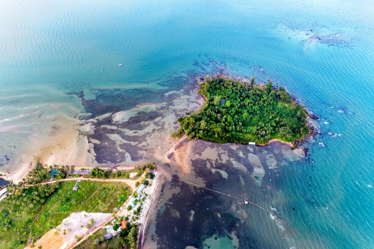
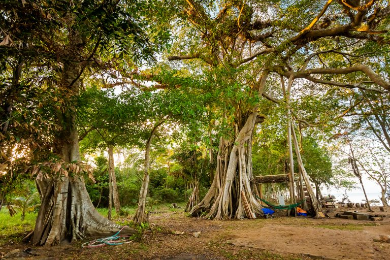
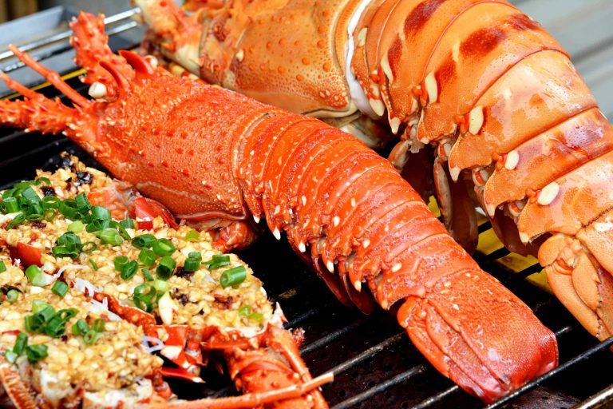
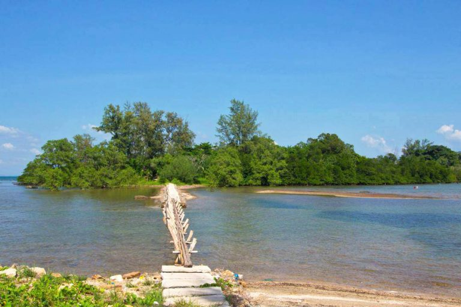

Hòn Một Phú Quốc là một địa danh vẫn còn xa lạ với nhiều du khách. Hòn đảo này vẫn chưa được nhiều du khách biết đến nên sẽ là sự lựa chọn hoàn hảo với những “tín đồ” thích khám phá địa điểm mới lạ. Khung cảnh thiên nhiên ở đây sẽ khiến bạn kinh ngạc bởi những cánh rừng nguyên sinh bạt ngàn, bãi biển trong xanh cùng bờ cát trắng. Cùng Go2Joy khám phá thêm về hòn đảo này nhé.
Hòn Một là một trong những hòn đảo nhỏ thuộc địa phận của xã Bãi Thơm. Hòn đảo này nằm cách đảo Phú Quốc khoảng 200m về phía Đông Bắc và được nối với nhau bằng 1 cây cầu đơn sơ. Diện tích của hòn đảo nhỏ này là khoảng hơn 6.7 ha và không có người sống trên đảo nên vẫn giữ được nét hoang sơ.
Toàn bộ diện tích trên Hòn Một Phú Quốc được bao phủ bởi rừng nguyên sinh um tùm. Những cây cổ thụ ở đây cũng rất nhiều và đa dạng giống loài. Khung cảnh rừng núi kết hợp với biển trời xanh mướt tạo sẽ khiến bạn phải trầm trồ vì sự hùng vĩ của thiên nhiên.
Từ trung tâm thị trấn Dương Đông bạn có thể chọn đường Nguyễn Trung Trực đến Bãi Thơm là đã có thể đến Hòn Một. Đoạn đường này sẽ dài khoảng 35km, trong đó có 1 đoạn đi ngang rừng Quốc gia Phú Quốc nên cảnh sắc sẽ vô cùng nên thơ.
Bạn cũng có thể chọn đi đường 30 Tháng 4 rồi rẻ trái ở đường DT47 rồi đi thẳng đến đường TL48 là sẽ ra đến biển, sau đó đi dọc bờ biển để đến được bãi Thơm. Con đường này sẽ xa hơn đường Nguyễn Trung Trực nhưng sẽ đi qua nhiều địa điểm du lịch nổi tiếng như: Khu du lịch Suối Mây, Trung tâm bảo tồn chó xoáy Phú Quốc, làng chài Hàm Ninh,… nên bạn có thể kết hợp tham quan nhiều địa điểm
Vì hòn Một nằm cách biệt với đảo Phú Quốc và hòn đảo này cũng không nằm vùng đông dân cư nên rất ít du khách biết được. Do đó, hòn đảo này vẫn giữ được khung cảnh thiên nhiên hoang sơ, hùng vĩ với nhiều cây cổ thụ to lớn, những dây leo hoa dại xuất hiện rất nhiều trên đảo.
Hòn Một có bãi cát tương đối dài và sạch nên các bạn có thể tổ chức cắm trại tại đây. Với khung cảm thiên nhiên yên bình, bạn sẽ có được những trải nghiệm đáng nhớ ở hòn Một. Hãy lưu ý mang đầy đủ dụng cụ vì hòn đảo này hiện vẫn chưa có người sinh sống nên nếu có vấn đề xảy ra thì bạn sẽ không nhận được sự trợ giúp từ cư dân.
Đến với hòn Một mà không tắm biển thì sẽ là một thiếu sót lớn. Biển ở đây vẫn còn hoang sơ và hệ sinh vật biển rất phát triển, bạn có thể ngắm nhìn những đàn cá bơi ngay bên cạnh mình. Làn nước trong xanh ở đây sẽ góp phần xua tan cái nóng trong những ngày hè.
Du lịch ở hòn Một vẫn chưa phát triển nên các hàng quán ở đây chủ yếu là do người dân sinh sống ở khu vực này mở. Do đó, bạn có thể yên tâm về mức giá và chất lượng các món ăn vì nguyên liệu chủ yếu được ngư dân đánh bắt nên rất tươi ngon.
Vì hòn Một vẫn chưa được phát triển du lịch và thiên nhiên trên đảo vần rất hoang sơ nên có một số lưu ý mà Go2Joy phải nhắc bạn để bạn có chuyến tham quan hòn Một đáng nhớ nhất.
Phú Quốc không chỉ là thiên đường nghỉ dưỡng mà còn có thiên nhiên hùng vĩ. Nếu bạn là người yêu khám phá và thích phiêu lưu thì hòn Một Phú Quốc là một địa điểm vô cùng phù hợp cho chuyến khám phá đảo ngọc.